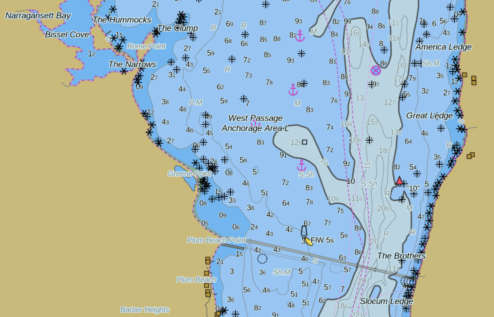
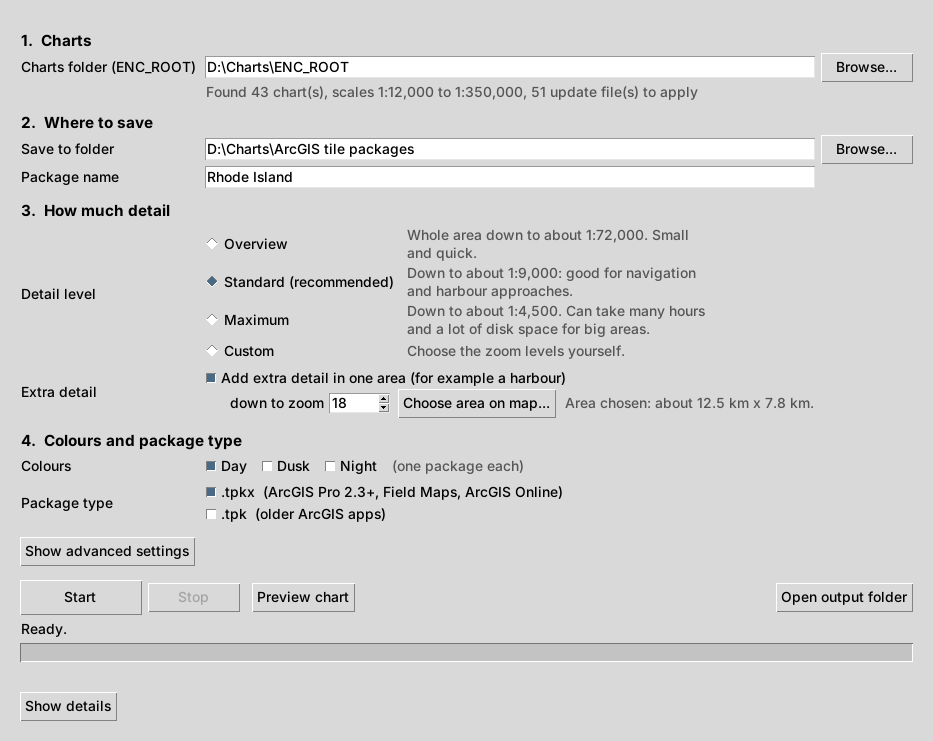
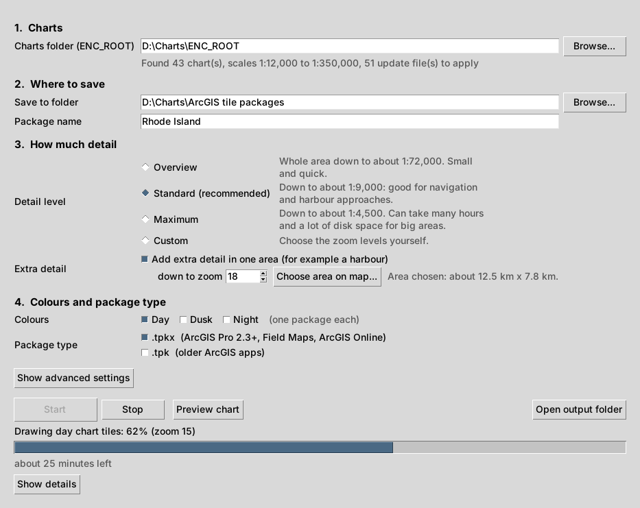
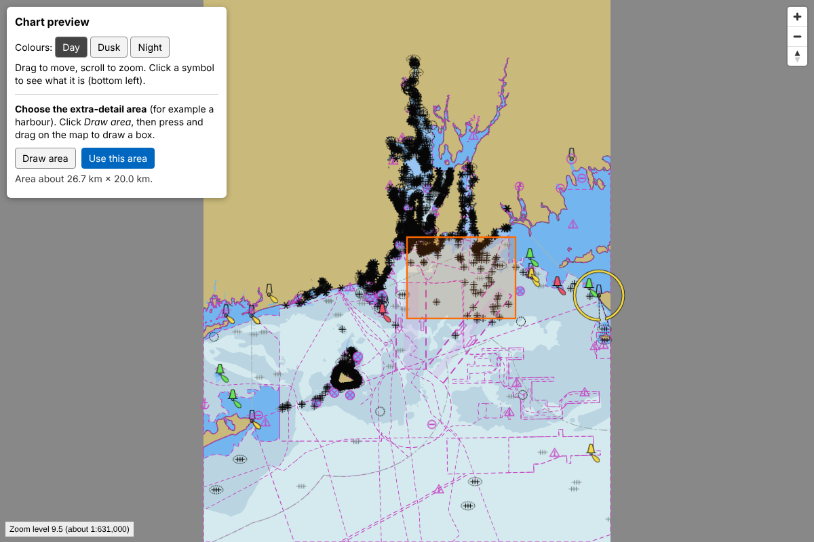

Turn S-57 electronic navigational charts into ArcGIS tile packages, with no installation and no command line.
In one sentence
You point the program at a folder of S-57 ENC charts, choose how much detail you want, press Start,
and get a .tpkx (or .tpk) file. That file shows the charts in ArcGIS Pro, ArcGIS Field Maps and ArcGIS Online,
in nautical-chart style, and works offline.

Example of the result: an ENC drawn in nautical-chart style (Narragansett Bay, USA).
Contents
What you need
Starting the program (first time)
Making a tile package, step by step
Choosing the amount of detail
Extra detail for a harbour
Using the result in ArcGIS
Stopping and continuing
Advanced settings
The files in the output folder
Troubleshooting
Good to know
1. What you need
Item
Details
A Windows PC
Windows 10 or Windows 11, 64-bit. A normal office PC or laptop is fine; more processor cores make it faster.
Microsoft Edge
Already part of Windows 10 and 11, so there is nothing to install. The program uses it, hidden in the background, to draw the charts. Google Chrome also works.
Your ENC charts
An S-57 exchange set: the ENC_ROOT folder, with one sub-folder per chart holding .000 files and optional updates (.001, .002 …). The charts must be unencrypted S-57. Encrypted S-63 charts cannot be used.
Free disk space
Plan on 2–3 GB for a regional set at the Standard detail level (see the example in section 3), and about four times that for Maximum. Once you have the finished package, you can delete the rest (section 9).
Nothing to install
The program is a single file, S57toTPK.exe. It does not install itself, needs no administrator rights, and can run from a USB stick.
To remove it, delete the file.
2. Starting the program (first time)
Unzip the download. Right-click the ZIP file → Extract All… → Extract.
Do not run the program from inside the ZIP window: extract it first.
Double-click S57toTPK.exe in the extracted folder.
If Windows shows a blue "Windows protected your PC" message: click More info, then Run anyway.
Windows shows this for any new program it hasn't seen many times before, not because something is wrong. You only need to do this once.
Wait about 10–20 seconds. The program unpacks itself each time it starts, so the window takes a moment to appear. Nothing is wrong if nothing seems to happen at first.
3. Making a tile package, step by step

The program window. Your window may look slightly different (Windows style buttons).
Charts folder: click Browse… next to Charts folder (ENC_ROOT) and choose the folder that holds your charts.
Underneath, the program confirms what it found, for example "Found 43 chart(s), scales 1:12,000 to 1:350,000".
If it says no charts were found, you probably picked a folder one level too high or too low: pick the one called ENC_ROOT.
Where to save: a folder is suggested automatically next to your charts. Click Browse… to choose another. Type a Package name; it becomes the file name, for example Rhode Island.tpkx.
How much detail: keep Standard (recommended) unless you have a reason to change it (see section 4).
Extra detail (optional): for one harbour or marina you can add closer zoom levels. See section 5.
Colours:Day is the normal chart look. Tick Dusk and/or Night as well if you want darker versions; each colour scheme becomes its own file.
Package type: keep .tpkx ticked; it suits current ArcGIS (Pro 2.3 and newer, Field Maps, ArcGIS Online).
Tick .tpk only for older ArcGIS apps.
Optional check: click Preview chart to see the chart in your web browser before the long conversion.
Click Start. A progress bar shows what is happening and roughly how long is left.

While it works: the status line, progress bar and time remaining. Stop pauses safely.
When it is finished a message lists the file(s) created and offers to open the folder. That's it: your package is ready (see section 6).
How long does it take?
It depends on the size of the area, the detail level and the PC. The first part (reading the charts) takes seconds to a minute.
Drawing the tiles takes most of the time. The window shows an estimate as soon as it starts drawing.
Example: {{EXAMPLE}}
Overview finishes in minutes. Maximum for a large region can take many hours, so let it run overnight.
4. Choosing the amount of detail
Digital maps are stored as zoom levels. Each level shows twice as much detail as the one before, and needs about
four times as many tiles. So the deepest level decides most of the time and file size.
Choice in the window
Zoom levels
Closest chart scale
Good for
Time and size
Overview
8 – 13
about 1:72,000
Coastal overview, passage planning
Small, quick
Standard (recommended)
9 – 16
about 1:9,000
Navigation, harbour approaches, most uses
Medium
Maximum
9 – 17
about 1:4,500
Close-up detail everywhere
About 4 × Standard
Custom
you choose
shown in the window
Special cases
Depends
Tip
Rather than Maximum everywhere, use Standard plus extra detail for just the harbour you need (next section).
You get the close-up where it matters for a fraction of the time and disk space.
5. Extra detail for a harbour
Tick Add extra detail in one area. Leave down to zoom at 18 (about 1:2,300); use 17 for a smaller result, or 19 for even more detail.
Click Choose area on map…. After a short preparation, your web browser opens and shows the chart.
In the browser, click Draw area, then press and drag on the map to draw a box around the harbour.
The size of the box is shown (for example about 12.5 km × 7.8 km).
Mouse wheel = zoom, drag = move the map. To change the area later, draw a new box.
Click Use this area. The program window confirms "Area chosen". You can close the browser tab.

Choosing the extra-detail area: drag a box on the chart, then click Use this area.
6. Using the result in ArcGIS
The finished file is in your output folder, named after your package, for example Rhode Island.tpkx.
If you chose Dusk or Night, those files end in -dusk / -night.
Where
How
ArcGIS Pro
On the Map tab click Add Data, browse to the .tpkx file, and click OK.
The charts appear as a layer you can show with other data.
ArcGIS Online / Portal
Content → New item → choose the .tpkx file, and let it create a tile layer.
You can then use it in web maps and in Field Maps, including offline areas.
ArcGIS Field Maps (offline)
Use the file as the basemap of an offline map area via ArcGIS Online (row above), or copy it directly to the device if
your organisation sideloads basemaps.
Other ArcGIS apps
Apps built with ArcGIS Maps SDKs (Runtime 100.5 or newer) open .tpkx as a tiled layer.
Older apps: use the .tpk type instead.
The package is a picture of the chart
The charts are stored as images (tiles). They display fast and work offline, but you cannot click a buoy to read its attributes or
change the symbols in ArcGIS. To change the look (for example the safety depth), convert again with different settings.
7. Stopping and continuing
Press Stop, or close the window, at any time. Finished work is kept.
Later, open the program (it remembers your settings) and press Start again: it continues where it stopped.
This also covers a PC restart, sleep or power cut during a long conversion.
If you change the detail level, area or tile settings, it starts the drawing again from the beginning for those settings.
Do not put the PC to sleep while it works: set Windows to stay awake for long runs (Settings → System → Power).
8. Advanced settings
Click Show advanced settings. You normally don't need to change these.
Setting
What it does
Tile sharpness
High-DPI (default) looks crisp on modern laptop, tablet and phone screens. Standard makes files about 4 times smaller, but text looks softer on sharp screens.
Image format
PNG (default) gives the best quality and crisp text. JPEG is the smallest, with slightly blurred text. Mixed uses JPEG inside the chart and PNG at the edges so the edges stay transparent.
Depths (metres)
The depths used for the chart colours, the same idea as on an ECDIS:
Safety contour (default 10 m): depth line drawn bold; water shallower than this is shown in darker blue.
Safety depth (default 10 m): soundings at or shallower than this are shown in black, deeper ones in grey. Isolated dangers in deep water get a magenta danger symbol.
Shallow (2 m) and Deep (30 m) contours: the other depth-shade boundaries.
Set these for your vessel's draft. Changing them re-reads the charts and redraws.
Browser used to draw
Automatic uses Microsoft Edge, or Chrome if Edge is missing. You can pick Edge or Chrome explicitly, or choose Other… and select any other Chromium-based browser program (Brave, Vivaldi, Opera). Firefox cannot be used for drawing.
Parallel browsers
How many hidden browsers draw at the same time. Automatic picks a value for your PC. Choose 1 or 2 if the PC becomes slow for other work or runs short of memory.
9. The files in the output folder
File / folder
What it is
Keep?
YourName.tpkx / .tpk
The result: the tile package for ArcGIS.
Yes
tiles-day.mbtiles (and dusk/night)
The drawn tiles before packaging. Lets you make the package again (e.g. as .tpk too) without redrawing.
A record of what happened. Useful if you need help.
Optional
Once you have your package, you can delete everything else in the output folder to free disk space.
Keep it if you plan to make the Dusk/Night versions or the other package type later: that saves time.
10. Troubleshooting
What you see
What to do
"Windows protected your PC"
Click More info → Run anyway (section 2).
The program disappears or antivirus reports it
Some antivirus products distrust new, unsigned programs. Ask your IT department to allow S57toTPK.exe, or restore it from quarantine.
"No S-57 chart files (.000) were found"
Choose the ENC_ROOT folder: the one holding one sub-folder per chart.
"No usable browser was found"
Microsoft Edge is missing or blocked. Install or repair Edge or Google Chrome, or pick a browser under Advanced settings → Browser used to draw.
Charts fail to read, or the result is empty
The charts may be encrypted (S-63). Only unencrypted S-57 charts can be converted.
"The disk is full"
Free space, or choose an output folder on a bigger drive, then press Start to continue.
"Ran out of memory" or the PC becomes very slow
Under Advanced settings set Parallel browsers to 1 or 2, then Start again.
It is very slow
Use Standard plus a harbour area instead of Maximum. Close other heavy programs. The log line "WebGL renderer" under Show details tells whether the graphics card is used; on PCs without a usable graphics card drawing is slower.
ArcGIS will not open the .tpk
Use the .tpkx file if your ArcGIS is recent. Otherwise report the error message (see below).
Something else went wrong
Click Show details and copy the last lines, or send the file s57totpk.log from the output folder to whoever supports you.
11. Good to know
Chart updates (.001, .002 … files) are applied automatically. When a chart appears more than once, the newest edition is used. Cancelled charts are left out.
Overlapping charts are combined the way a chart plotter does: wherever a larger-scale (more detailed) chart exists, it is used.
New chart updates? Put them in the same ENC_ROOT and press Start again: the program notices the change and rebuilds.
The symbols follow the international S-52 chart style closely, but this is not a certified ECDIS display. Use the result as a reference and situational map. It does not replace official navigation equipment.
For IT staff: the program also has a command line. Run S57toTPK.exe --help from a Command Prompt.